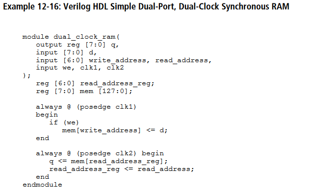
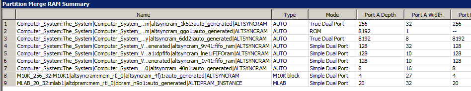
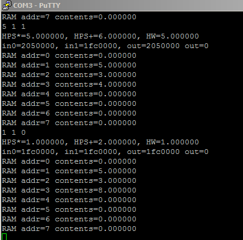

The memory systems of Altera Cyclone5 FPGAs have various features and limitations.
I will not talk about the HPS side here, only the FPGA side.
Memory systems include:
These are explained in several documents.
I have tried here to show specific examples of memory use in realistic state machine schemes. Refer to:
The HDL style Guide suggest the following code to infer M10K or MLAB blocks

Timing diagrams:
You can set up M10K blocks in at least 3 ways:
module RAM_512_18( output reg signed [17:0] q, input signed [17:0] data, input [8:0] wraddress, rdaddress, input wren, rden, clock ); reg [8:0] read_address_reg; reg signed [17:0] mem [511:0]; reg rden_reg; always @ (posedge clock) begin if (wren) mem[wraddress] <= data; end always @ (posedge clock) begin if (rden_reg) q <= mem[read_address_reg]; read_address_reg <= rdaddress; rden_reg <= rden; end endmodule
Memory block Example -- Qsys sram and MLAB
This example simultaneously tests the floating point routines, shares a M10K between HPS and FPGA, and uses a MLAB block to increment a counter. The M10K block is instantiated in Qsys as dual port memory with two clocks, system clock, and an 50MHz clock. One slave port is hooked to the HPS bus and the other port is exported to the FPGA fabric. These exported signals appear in the computer system template as:
// SRAM shared block with HPS .onchip_sram_s1_address (sram_address), .onchip_sram_s1_clken (sram_clken), .onchip_sram_s1_chipselect (sram_chipselect), .onchip_sram_s1_write (sram_write), .onchip_sram_s1_readdata (sram_readdata), .onchip_sram_s1_writedata (sram_writedata), .onchip_sram_s1_byteenable (4'b1111),
The state machine in Verilog can read/write to the same block as the HPS, which thus acts as a communication channel. The program running on the HPS writes floating point values into the sram. The sram state machine reads the memory location in sram, then write back the value to another address, which is read by the HPS program and printed. There is a separate state machine which read/writes an MLAB block. The fitter ram summary (line 8) shows that the following code inferred an MLAB block. Note that I forced it with the synthesis directive. The MLAB timing is the same as M10K blocks. A read takes two cycles.
//============================================================ // MLAB module for testing //============================================================ module MLAB_20_32( output reg signed [31:0] q, input [31:0] data, input [7:0] readaddr, writeaddr, input wren, clock ); reg [7:0] read_address_reg; // force MLAB ram style reg signed [31:0] mem [19:0] /* synthesis ramstyle = "no_rw_check, MLAB" */; always @ (posedge clock) begin if (wren) begin mem[writeaddr] <= data; end q <= mem[readaddr]; end endmodule
The MLAB state machine reads an address, then writes back the (read_value)+1, and copies the count to the red LEDs.
(HPS program, top-level, ZIP)
//======================================================= // MLAB state machine //======================================================= wire [31:0] mlab_readdata ; reg [31:0] mlab_writedata, mlab_data_buffer ; reg [7:0] mlab_address; reg mlab_write ; reg [3:0] mlab_state ; MLAB_20_32 mlab1( .q(mlab_readdata), .data(mlab_writedata), .readaddr(mlab_address), .writeaddr(mlab_address), .wren(mlab_write), .clock(CLOCK_50) ); // readout for memory state assign LEDR = mlab_data_buffer[31:23] ; // memory based counter // reads/writes counter for display always @(posedge CLOCK_50) begin //set up read if (mlab_state == 4'd0) begin mlab_address <= 8'd0 ; mlab_write <= 1'b0 ; mlab_state <= 4'd1 ; end // wait -- required for read if (mlab_state == 4'd1) begin mlab_state <= 4'd2 ; end // do the read if (mlab_state == 4'd2) begin mlab_data_buffer <= mlab_readdata ; mlab_write <= 1'b0 ; mlab_state <= 4'd3 ; end // set up write if (mlab_state == 4'd3) begin mlab_address <= 8'd0 ; mlab_writedata <= mlab_data_buffer + 32'd1 ; mlab_write <= 1'b1 ; mlab_state <= 4'd0 ; end end
Memory block Example -- Qsys sram, M10K block, and MLAB
This Verilog modification of the project above reads two numbers from the Qsys sram (connected to HPS and the FPGA fabric) and computes the floating point sum of the contents of sram address=1 and address=2, when the data flag in Qsys sram address=0 is set to one. The sum is copied into an M10K block, then back into the Qsys sram, address=3. This roundabout scheme exercises read/write in M10K blocks. An MLAB block is still counting, as above.
The RAM synthesis summary shows that two blocks were created, and that the clever compiler figured out that I only used 4 locations of the M10K block.

The HPS program is the same as above and produces this console.
The 1 1 0 on the command line writes a 1 to location zero to trigger the addition and write-back.
The location zero always reads zero because it is zeroed by the FPGA state machine before the write statement executes.

FIFO between HPS and FPGA
There is a Qsys FIFO module (chapter 14) available that could make a good interface between the HPS and FPGA.
{kind=link}
{kind=link}
{kind=link}
{kind=link}
{kind=link}
{kind=link}
{kind=link}
{kind=link}
{kind=link}
{kind=link}
{kind=link}
{kind=link}
{kind=link}
{kind=link}
{kind=link}